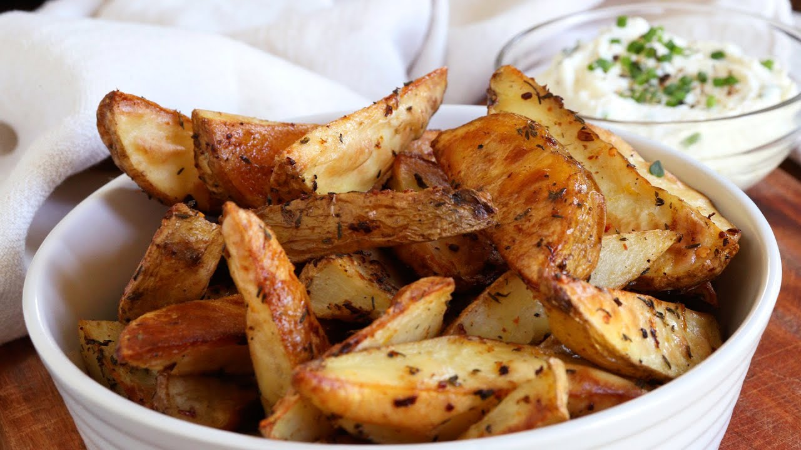

papas al horno

clasicas papas al horno
un platillo sencillo y delicioso
es otra forma de comer potatos
ingredientes
- papas
- sal
- aceite
- condimentos
pasos
- pelar y lavar las papas
- cortarlas en triangulos pequeños
- condimentar y salar
- mandar al horno alto y precalentado
- es todo